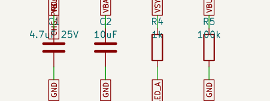

Applied: C1 changed from 10 µF to 4.7 µF
C1 (4.7 µF) and C40 (100 nF) both connect directly to VBUS: 4.8 µF nominal, reduced from 10.1 µF. TI calls for less than 10 µF directly at the input for USB inrush. These upstream capacitors are outside the charger's current limiting.
Selected Samsung CL21A475KAQNNNE (C1779): 4.7 µF, 25 V, X5R, ±10%, same 0805 footprint. Manufacturer typical DC-bias curve gives −31.84% at 5 V, or approximately 3.20 µF, within TI’s 1–10 µF IN bypass recommendation. This typical curve is not a guaranteed minimum across all operating conditions. C40 remains fitted.
Applied with user approval. Generator, schematic, PCB, BOM and fabrication outputs updated. Existing copper routing preserved. Manufacturer data; saved typical curve.

Routing and testing still open
The pair uses two layer transitions per wire and a long front-layer section over In1.GND. Existing geometry checks cover reference-plane continuity. Fabrication specifies a 90 Ω differential target; supplier confirmation remains pending. Width and spacing alone do not establish achieved impedance.
Summed copper lengths including MCU-side segments and connector branches are about 70.53 mm on D+ and 67.29 mm on D−. These totals are not exact point-to-point path lengths and do not establish strict length matching.
Espressif routing guidance · TI inrush guidance · CC pull-down explanation
Bring-up: both plug orientations, USB-A–C and USB-C–C cables, repeated flashing/reconnect, input inrush/droop, suspend/resume and charging while OFF. ESD qualification is separate.
Four groups follow USB: display; controls/sensing; PCB components/layout; mechanical/assembly.